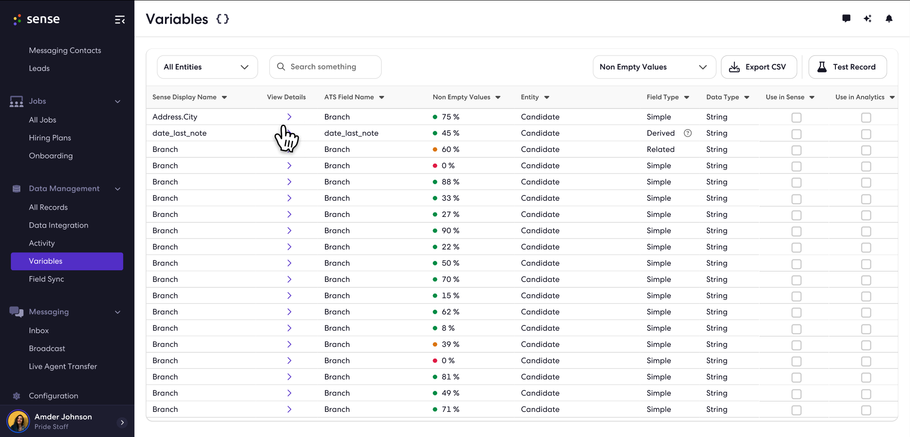

Design PhilosophyDensity
Function Over Form
Customers often have messy data (e.g., three different fields named "Address"). They didn't need a pretty card view; they needed a high-density diagnostic tool.
I designed this grid to show maximum rows per page, with a Global Search that cuts across all entities (Candidate, Job, Placement). This prevents users from checking the wrong entity silo and missing critical data.

The "Data Command Center." Note the cross-entity search and "Fill Rate" indicators.